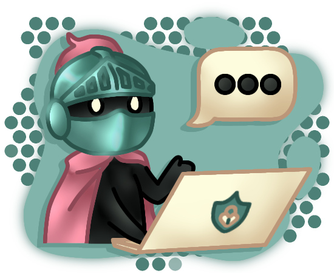
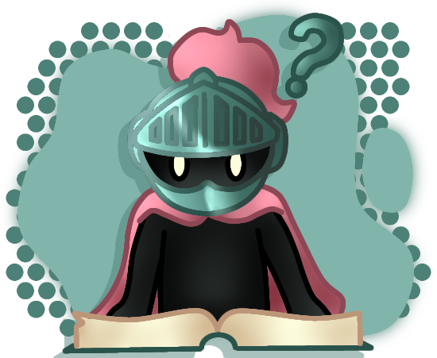
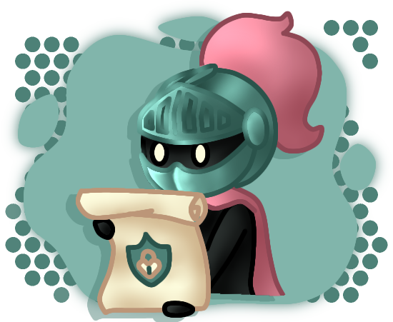
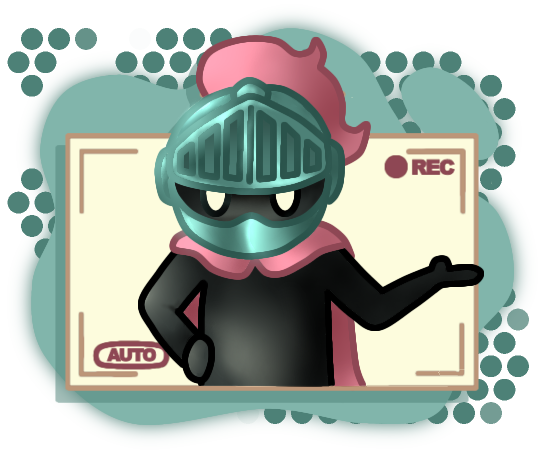
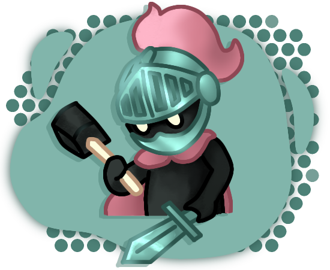

No Cyber Guardiões, ajudamos a proteger suas crianças online. Expondo informações, notícias, vídeos e ferramentas para garantir a segurança digital, além de um fórum próprio.
|  |
« FórumParticipe do nosso fórum e compartilhe experiências sobre segurança digital e monitoramento parental com outras pessoas. |
|---|---|
Infográfico »Descubra dicas e guias sobre segurança digital e monitoramento parental. |
 |
|  |
« NotíciasFique atualizado sobre o mundo da tecnologia e proteja suas crianças! |
Vídeos »Aprenda sobre segurança digital com vídeos educativos. Assista agora. |
 |
|  |
« FerramentasDescubra as melhores ferramentas para proteger crianças e adolescentes online. Explore agora! |